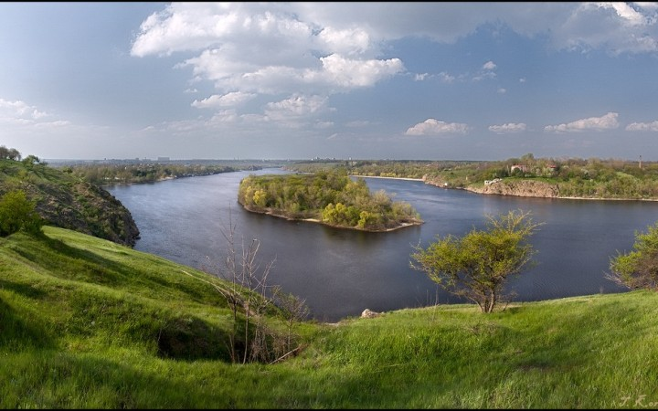
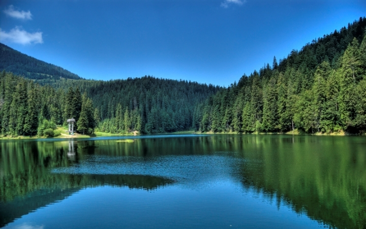

5 пам'яток України, які потрібно відвідати
В Україні стільки дивовижних місць та унікальних пам'яток, що нам позаздрить не одна екзотична країна, яка закликає мандрівників зі сторінок модних журналів та рекламних буклетів. Хочете побачити величні гори та прозорі озера, неприступні замки та романтичні парки, потрапити без жодних віз до Швейцарії та Венеції? Їдьте в тури Україною!
Гора Говерла(Карпати)
Найбільша вершина України, вона ж – найзнаменитіша.
Краси одного з найцікавіших і одухотворених місць нашої країни
щороку приваблюють туристів.
Говерлу підкоряли політичні діячі та прості любителі активного
відпочинку.
Тільки забравшись сюди, на висоту 2061 метрів над рівнем моря, можна зрозуміти, як це дивитися на світ з висоти пташиного польоту.
Острів Хортиця (Запоріжжя)
Колиска українського козацтва, наш власний острів свободи. Місце, в якому хоч раз має побувати кожен українець, щоб краще дізнатися про історію нашого народу та повною мірою відчути атмосферу, в якій зароджувався неповторний козацький дух.
То де ще, якщо не на екскурсії на Хортицю , можна підзарядитись енергією та відчути себе по-справжньому вільним?!
Тунель кохання (Клевань)
У пошуках романтики зовсім не обов'язково летіти до Парижа. Унікальне місце для побачень, освідчень у коханні та спільного загадування бажань у Рівненській області створила сама природа. Тунель кохання розташований уздовж залізниці між селищами Клевань та Оржев.
Поцілунок під покровом густих чагарників дерев і чагарників обіцяє закоханій парі щасливе майбутнє.
Озеро Синевир (Карпати)
Найбільша водойма Українських Карпат, озеро фантастичної краси, оточене смарагдовими лісами та засніженими гірськими вершинами. Тут збереглася дика, первоздана природа, не зломлена повсюдним натиском цивілізації.
Синевір зберігає безліч таємниць, розкрити які під силу далеко не кожному, і пам'ятає зворушливі легенди, доторкнутися до яких корисно всім.
Дендропарк «Софіївка» (Умань)
Чудовий символ кохання, подарунок, який зробив своїй дружині Софії польський магнат Станіслав Потоцький. Це знахідка для справжніх романтиків, любителів нетривіальних пейзажів та переконаних шанувальників давньогрецької міфології.
Краєвиди «Софіївки» прекрасні в будь-який час року, а безліч шедеврів скульптури та ландшафтного дизайну тісно пов'язані з античними міфами.